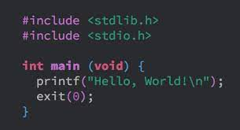
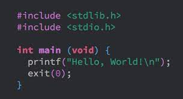

C is a programming language developed at AT & T's Bell Laboratories of USA in 1972.
It was designed and written by Dennis Ritchie.
Initially C language was created for a specific purpose, that was to design the UNIX operating
system. In the late seventies C began to replace the more familiar language of that time like
PL/I, ALGOL etc. Although it is a general-purpose programming language, its compact syntax and
efficient execution characterisitics have made it a system programming language.
The C language is so named because is predecessor was called B. The B language was developed by
Ken Thompson of Bell Labs.
C is a general-purpose programming language, it has been closely associated with system
programming activities. It was first used to write the kernal of the UNIX operating system and
has been closely tied to UNIX implementations.
Today C is most of popular, structured, high-level, machine independent
language. Major developments in C took place in the period of 1972 to 1983.
Historical Development of C
-
The ALGOL (ALGOrithm Oriented Language) is the root of all modern languages. It was
introduced in 1960. ALGOL is a structured programming language used for system
programming.
-
In 1967, Martin Richards developed a language called BCPL (Basic Combined Programming
Language) primarily for writing system software. In 1970, Ken Thompson created a
language using many features of BCPL and called it simply B. B was used to create early
versions of UNIX at Bell Laboratories. Both BCPL and B were system programming
languages.
-
C was evolved from ALGOL, BCPL and B by Dennis Ritchie at the Bell Laboratories in 1972
with concept of datatypes and new features. It was developed along with UNIX operating
system. During these days C language is very popular in educational, commercial use.
-
During 1970s, C had evolved into say that Traditional C
. Traditional C became more
popular after publication of the book, The C Programmign Language
by Brian
Kerninghan and Dennis Ritchie in 1978. This language popularly called as K&R C
-
The Standard version of C approved by American National Standards Institute (ANSI) in
1989 which is known as ANSI C. This version of C is also referred to as C89.
-
There were continuous efforts to improve the power and scope by incorporating new
features in C. The standadization committee of C has added few features of C++/Java in
1999. This version usually referred to as C99.
| Year |
Language |
Developed by |
| 1960 |
ALGOL |
International Group |
| 1967 |
BCPL |
Martin Richards |
| 1970 |
B |
Ken Thompson |
| 1972 |
Traditional C |
Dennis Ritchie |
| 1978 |
K&R C |
Kerninghan & Ritchie |
| 1989 |
ANSI C |
ANSI Committe |
| 1990 |
ANSI/ISO C |
ISO Committee |
| 1999 |
C99 |
Standardization Committee |
What is C?
- The C Language: This is a relatively small language with a lmited number of
control structures and features.
- The C Preprocessor: Because almost every C compiler includes # preprocessor
statements, most users do not relize that there are not really part of the C language.
- The C interface assumptions: A set of conventions has grown up over the use of C
features. For example interface definations between modules are assumed to be defined in
an appropriate ".h" header file extension.
- The C library: Many functions, such as printf, getch, malloc have been written
with C language interfaces, although they are not officially part of C language
defination. However, ANSI C includes these functions as required libaray functions.
Why use C?
- In today's world of computer programming, C language is high-level language, developed
language and robust language hence we use the C and It is rich in library and header
files.

 
